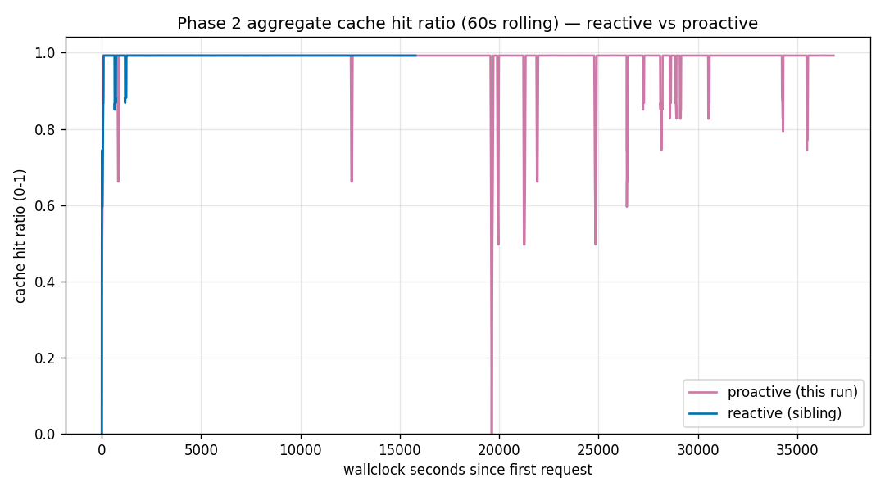

실험 노트 · exp005 · PAYG(종량제) 두 배포로 PTU(고정 용량) 스필오버를 대리 측정(Phase 2) · 캐시 풀을 진짜로 나눴을 때
exp005 — 캐시 풀을 진짜로 나눴더니, 똑똑한 정책이 더 크게 졌다
글 Hyeonsang Jeon · Global Black Belt, Cloud & AI Apps
지난 노트(exp004)에서는 배포 하나 위에서 스필오버(넘침 대비)를 흉내 냈다. 사실상 무승부였던 두 정책(−0.1657%p)을 두고 우리는 “진짜 판정은 Phase 2의 몫이다.”라고 적었다. 이번이 바로 그 Phase 2다. 배포는 이제 둘, 스로틀은 진짜다. 원래 배포와 예비 배포의 캐시 풀도 물리적으로 갈린다.
이런 예측이 자연스러웠다 — 캐시 풀이 진짜로 나뉘면 원래 배포를 미리 지키는 사전 대비(proactive) 정책이 이번엔 값을 할지도 모른다. 사전 등록한 예측은 두 갈래였다. 격차가 커지면 ‘캐시 재구축 비용’이 진짜라는 뜻이고 비슷하면 캐시 풀 분리가 별 요인이 아니라는 뜻이다.
이번 실측은 예상에서 더 크게 벗어났다. 한도 구간의 정상상태 캐시 히트는 reactive 99.2337%, proactive 98.2414%로, 미리 대비한 쪽이 오히려 0.9923%p 낮았다(Phase 1 격차의 약 6배). proactive는 throttled 원래 배포에 매달리다 실제 429(“지금은 안 됨” 신호)를 167번 맞았고 reactive는 0번이었다. 비용도 $0.91 더 썼다. 이 노트에서는 그 22분을 설계 → 입력 → 예측 대 실측 → 두 곡선 → 결정 순서로 되짚는다 — 캐시 풀을 나누자 똑똑한 정책은 더 크게 졌다.
왜 읽어야 하나
원래 배포와 예비 배포를 진짜로 나눠 쓰면 무슨 일이 나나
이 실험은 PTU 배포가 한도에 가까워져 스필오버가 트래픽 일부를 예비 배포로 흘려보내는 패턴을 모사한다. Phase 1은 이 예비 경로를 배포 하나 안에서 라벨로만 흉내 냈다 — 원래 경로든 예비 경로든 같은 캐시(프롬프트를 재사용해 아껴 쓰는 저장고)를 봤다. 이 때문에 정책 차이가 캐시에 거의 영향을 주지 않았다.
Phase 2는 그 고정 용량 패턴의 대리(proxy)로 GlobalStandard PAYG(종량제) 두 배포를 썼다. 라우팅·스로틀·분리된 캐시 풀은 직접 측정했지만, 그 결과를 PTU 과금과 용량에 적용하는 것은 여전히 추론이다.
Phase 2에서는 그 의심을 걷어낸다. 원래 배포와 예비 배포를 서로 다른 실제 배포로 두면 Azure 설계상 캐시 풀도 갈린다. ‘어느 배포로 보냈나’가 곧바로 캐시 온도를 좌우한다. 한쪽으로 몰면 그 풀만 뜨겁게 유지되지만 둘로 나누면 양쪽이 다 미지근해진다.
원래 배포 + 예비 배포를 물리적으로 나눠 운영할 때 생기는 질문은 “원래 배포를 지키려고 트래픽을 미리 조금씩 나눠 흘리면 캐시를 더 지킬까?”다. 실측 결과는 ‘나누지 마라’에 가깝다.
먼저, 10초
결론을 믿지 말고 숫자부터 직접 찍어 보세요
토큰 소비는 0입니다. 첫 두 줄은 두 정책의 입력·변수·산출물 카드를 그대로 출력하고 마지막 줄은 게시된 집계에서 헤드라인 숫자를 다시 계산해 이 노트와 맞는지 대조합니다(네트워크·자격증명 없음).
# 두 정책(reactive · proactive)의 입력 → 변수 → 산출물 카드를 출력 (네트워크 없음)
python3 -c "import experiments; print(experiments.describe('exp005_dual_spillover_reactive.yaml').summary())"
python3 -c "import experiments; print(experiments.describe('exp005_dual_spillover_proactive.yaml').summary())"
# 게시된 집계에서 포화 구간 캐시 히트를 다시 찍어 노트와 대조 (토큰 0)
python3 -c "import json; s=json.load(open('benchmarks/05-dual-spillover/analysis.json'))['per_policy_stats']; print('sustain cache-hit reactive=%.4f%% proactive=%.4f%% gap=%+.4f pp' % (s['reactive']['sustain']['cache_hit_ratio']*100, s['proactive']['sustain']['cache_hit_ratio']*100, (s['proactive']['sustain']['cache_hit_ratio']-s['reactive']['sustain']['cache_hit_ratio'])*100))"실제 라이브 부하를 재현하려면 Azure 자격증명과 실제 과금이 필요합니다 — 진짜 이중 배포 부하 테스트이기 때문입니다. 자격증명 없이 되짚으려면 게시된 원시 JSONL에서 analysis.json을 다시 유도하는 절차를 따르세요. benchmarks/05-dual-spillover/analysis.md의 재현 푸터에 정리되어 있습니다.
설계
이번엔 캐시 풀을 진짜로 나눈다
왜 이걸 쟀나. Phase 1의 무승부에는 해석상 한계가 하나 있었다 — 배포가 하나라 캐시 풀이 공유였다. ‘정책에 따른 차이가 원래 없는 것’인지, 아니면 ‘공유 캐시 때문에 차이가 나타나지 않은 것’인지 가릴 수 없었다. Phase 2는 이 한계를 없앤다. 캐시 풀을 실제로 분리하고도 판정이 같은지 본다.
사전 등록한 예측은 ‘격차의 크기’에 걸었다. 두 갈래였다 — Phase 2 격차가 Phase 1보다 뚜렷이 커지면, 캐시 풀이 갈릴 때 트래픽을 나누는 값(캐시 재구축 비용)이 진짜라는 뜻. 비슷하면, 캐시 풀 분리는 정책 타이밍보다 작은 요인이라는 뜻. 어느 쪽인지 실측으로 가른다.
원인 규명이 아니라 완화책 비교다. ‘스필오버가 캐시 하락의 근본 원인’이라는 강한 주장은 이미 현장 관찰에서 힘을 잃었다. 이 실험은 원인을 캐지 않고 두 완화 정책 중 어느 쪽이 나은지만 겨룬다.
왜 이중 배포인가. 두 배포 모두 GlobalStandard PAYG(종량제) 계층을 쓴다. 원래 배포(ptu-deploy-throttled)에는 60,000 TPM(분당 토큰 한도)이라는 낮은 상한을 일부러 걸었다. 약 30K 토큰 부하가 진짜 429를 뱉게 하려는 설정이다. 예비 배포(gpt-5.2)에는 500,000 TPM의 넉넉한 여유를 줬다. 배포 이름이 다르면 캐시 풀도 다르므로 Phase 1이 흉내만 냈던 ‘물리적 분리’가 여기서는 실제로 일어난다.
질문은 하나다. 캐시 풀이 물리적으로 갈린 위에서, 미리 대비하는 스필오버가 사후 반응보다 캐시를 더 지키는가?
설계(부하). Phase 1과 바이트까지 같은 22분 부하를 두 정책에 똑같이 흘린다 — 웜업 2분(초당 0.3요청) → 램프 10분(초당 0.5→2.5요청) → 지속 10분(초당 2.0요청). effort=low, 시스템 프롬프트 약 30K 토큰(두 런이 바이트까지 동일하도록 SHA-256 98d3a5…088a로 고정, corpus_seed 4242). 예정 요청은 정책당 2,136건(웜업 36 · 램프 900 · 지속 1,200).
변하는 축은 딱 하나다. policy.type만 reactive와 proactive로 바꾼다. 프롬프트·부하·모델·강도·두 배포 상한을 모두 고정했으므로 두 산출물은 정책에서만 달라진다.
사전 등록한 예측
캐시 풀이 진짜로 갈리면 proactive가 값을 할 수도 있다. 사전 등록한 판정선은 격차의 크기 — Phase 1보다 커지면 캐시 재구축 비용이 진짜, 비슷하면 분리는 작은 요인.
이 실험의 역할
Phase 1(공유 캐시 바닥)에 이은 고충실도 재측정. 원래/예비 캐시 풀이 물리적으로 갈릴 때, 정책에 따라 캐시·비용·429가 실제로 달라지는지 확인한다.
입력과 산출물
무엇을 먹고 무엇을 남겼나
이 실험이 먹은 것도 남긴 것도 손으로 쓴 요약이 아니라 레포의 실제 파일입니다. 입력에서 출력까지 한 줄로 되짚을 수 있습니다.
입력 (in)
정책 정의: experiments/exp005_dual_spillover_reactive.yaml, …_proactive.yaml (policy.type만 다름).
두 배포: 원래 ptu-deploy-throttled(60,000 TPM) · 예비 gpt-5.2(500,000 TPM).
고정: 두 런의 시스템 프롬프트를 SHA-256(98d3a5…088a)으로 고정 — 두 정책이 바이트까지 같은 프롬프트를 받았음을 보증.
산출물 (out)
원시 호출: runs/*.jsonl (+ 요청별 *.summary.json, 응답별 스필오버 헤더 포함).
집계: analysis.json · analysis.md.
곡선: results/dual-spillover-curves/*.png·.csv (배포별·집계 캐시 히트, 실제 429 타임라인).
reactive는 2,136요청을 끝까지 돌렸다(완료=예정=2,136). proactive는 완료 2,303 / 예정 2,136이다. 남는 167건은 실제 429가 각각 하나의 실패 행으로 기록된 것으로, 토큰이 0이라 집계에는 영향이 없다. 실제 429는 reactive 0건 · proactive 167건이며 전부 throttled 원래 배포에서 나왔다. dry_run=false, dirty=false, 중단 없음. 지운 행은 없다 — 무엇을 왜 남겼는지는 아래 투명성에서 짚는다.
예측 대 실측
예측은 또 빗나갔다 — 더 세게
무엇을 예측했나
캐시 풀이 진짜로 갈리면 미리 대비하는(proactive) 정책이 이번엔 값을 할지도 모른다. 최소한 격차의 방향이 뒤집힐 만한 자리였다.
무엇이 나왔나
한도 구간의 캐시 히트는 reactive 99.2337% vs proactive 98.2414% — 미리 대비한 쪽이 0.9923%p 낮았다(Phase 1의 −0.1657%p보다 약 6배 큰 격차). 실제 429는 0 대 167.
판정: 캐시 풀을 나누자 미리 대비는 더 크게 값을 못 했다. 실측은 사전 등록한 두 갈래 중 ‘격차가 커진다’와 일치했다 — 캐시 풀이 갈릴 때 트래픽을 미리 나누면 캐시 재구축 비용이 실제로 발생했고 proactive의 손해로 이어졌다. Phase 1에서 제기한 “공유 캐시라 안 새겨졌나?”라는 의문도 해소됐다 — 캐시를 진짜로 나누면 나누는 정책이 손해다.
첫 번째 신호
똑똑한 정책이 더 크게 졌다
아래 표는 지속(sustain) 10분 정상상태다 — 부하가 목표에 눌러앉은, 가설이 사는 구간이다. 숫자는 게시된 집계 analysis.md §5·§7에서 재인용했다.
정책 포화 스필오버 포화 캐시 히트(분당 평균 ± 표준편차) 실제 429 비고
reactive 98.75% 켜짐 99.2337% (±0.0026%p) 0 기준선 · 예비 풀 하나로 몰아 뜨겁게
proactive 67.95% 켜짐 98.2414% (±4.3726%p) 167 원래+예비로 나눠 양쪽이 다 식음
차이(pro−re) — −0.9923%p +167 Phase 1(−0.1657%p)의 약 6배두 곡선 모두 대체로 99.2% 근처를 지난다. reactive는 표준편차 0.0026%p로 바위처럼 안정적이다 — 예비 배포 하나에 몰아넣어 그 풀이 내내 뜨거웠기 때문이다. 반대로 proactive는 표준편차가 4.3726%p로 요동친다. 원인은 throttled 원래 배포가 뱉은 지속 구간 429 154건(토큰 0의 실패 행)과 트래픽을 두 풀로 나누며 생긴 캐시 미스 12건(원래 배포 7 · 예비 배포 5)이다. 이들 때문에 분(minute)마다 값이 낮아졌고 집계 평균은 98.2414%까지 내려갔다.
전구간(웜업+램프+지속)으로 창을 넓혀도 방향은 같다. reactive 99.0479% vs proactive 98.2112%로 reactive가 0.8367%p 높다. Phase 1은 창을 넓히면 방향이 뒤집혔지만 Phase 2에서는 어느 창에서나 reactive가 앞선다.
results/dual-spillover-curves/policy_comparison_aggregate.png.
두 번째 신호
왜 갈렸나 — 나누면 양쪽이 다 식는다
이번에는 두 정책의 캐시 결과가 달랐다. Phase 1과 갈리는 지점이다. reactive는 웜업 첫 요청부터 예비 배포로 넘어가 한도 구간 내내 트래픽의 98.75%를 그 하나의 풀에 몰아넣었다. 한 풀만 계속 데운 덕분에 지속 캐시 미스는 0건이고 풀은 99.2336%로 뜨겁게 유지됐다. 실제 429도 0건이었다 — throttled 원래 배포를 거의 건드리지 않았기 때문이다.
proactive는 트래픽을 두 풀로 나눠 불리했다. 원래 배포를 지키려고 트래픽을 나눈 탓에 한도 구간의 스필오버 비율이 67.95%에 그쳤고 나머지 약 43%는 계속 throttled 원래 배포로 갔다. 그 배포는 30K 토큰 부하를 감당하지 못해 실제 429를 167번 뱉었다. 트래픽도 두 풀로 흩어져 어느 쪽도 reactive의 단일 풀만큼 데워지지 못했다 — 지속 캐시는 원래 배포 96.7534%, 예비 배포 98.6942%로 둘 다 reactive의 99.2336%보다 미지근했다.
비용과 지연도 같은 방향이다. 두 런의 총 토큰은 거의 같다(reactive 45,850,205 · proactive 45,851,851). 하지만 전구간 비용은 reactive $17.895660 vs proactive $18.806026로 proactive가 $0.910366 더 든다. 캐시 온도만으로 생긴 차이다. proactive의 낮은 캐시 히트 때문에 입력 토큰 약 38만 개에는 캐시 요율($0.175/1M) 대신 정가($1.75/1M)가 적용됐다. 지속 첫 토큰 지연(TTFT)도 reactive가 더 빠르며(p50 7,153.9ms 대 7,926.6ms), 전구간 p95는 proactive가 34,631.71ms까지 치솟는다 — 429 백오프가 실제 지연 위에 쌓인 탓이다.
캐시 풀이 진짜로 갈리자 원래 배포를 지키려고 트래픽을 나눈 정책은 두 캐시를 다시 데워야 했고 throttle 벌점(429)까지 받았다. 한 풀에 몰아 뜨겁게 유지한 reactive가 더 나았다.
투명성
숫자에 남긴 얼룩까지 그대로
완벽하게 깨끗한 측정은 없다. 이 실험이 남긴 자국도 지우지 않고 적어 둔다. 감추면 다음 사람이 같은 자리에서 헛디딜 수 있기 때문이다.
- 지운 이상치 0건. 이상치 규칙에 따라 ‘포화 구간에서 지연이 평균+3σ를 넘고, 동시에 실제 429·재시도·경로 전환 같은 로그 이벤트가 겹칠 때’만 제외한다. 후보는 reactive 6건·proactive 18건이었다. 일부는 이벤트와 겹쳤지만 해당 후보를 빼도 지속 TTFT가 1% 미만으로만 흔들려 전부 남겼다.
- 유지한 이상 행. proactive에는 0토큰 지속 행 154건(실제 429의 실패 시도)과 캐시 미스 행 12건이 있고 reactive에는 둘 다 0건이다. 측정 오류가 아니라 이 벤치마크가 재려고 만든 현상 자체이므로 원자료 그대로 집계에 반영했다 — proactive의 낮은 지속 평균은 바로 이 429와 캐시 미스에서 나왔다. 감추지 않는다.
- 헤드라인은 지속 정상상태다. 램프·웜업의 과도기를 섞으면 정책 효과가 흐려지므로 가설이 사는 지속 10분을 대표 숫자로 삼았다. 전구간 수치도 함께 두어 어느 창에서도 reactive가 앞선다는 걸 확인하도록 했다.
한계
어디까지 믿을 수 있나
이 결과는 한 Foundry 리소스 안의 두 배포, 각 하나의 용량 등급, 하나의 부하 프로파일, 한 번의 실행에서 나온 값입니다. 숫자 자체보다 방법과 방향을 기준으로 삼는 편이 안전합니다.
- 절대 수치는 이전 안 된다. 두 배포는 한 리소스 안에 있고 각각 하나의 용량 등급을 쓴다. 캐시 히트와 달러 값은 다른 테넌트·리전·용량 계획에 그대로 적용되지 않는다 — 정책 간 차이의 방향을 읽어야 한다.
- 커스텀 라우터다. 스필오버는 파이썬 클라이언트의 라우터로 돌렸다. Azure 네이티브 스필오버(
spilloverDeploymentName방식)와는 다를 수 있어 응답별 스필오버 헤더를 남겼고 나중에 네이티브 방식과 대조할 수 있다. - 완화책 비교지 원인 규명이 아니다. 이 실험으로는 어떤 현장 캐시 하락의 근본 원인도 가릴 수 없다. 강한 형태의 가설은 이미 현장 측정에서 기각됐다.
- 부하·표본. 실행은 22분 한 번이고 정책마다 2,136 예정 요청을 잡았다. 이 정도 표본으로 신뢰구간이나 통계적 유의성을 주장하지 않는다. 방향은 견고하지만 절대 크기를 읽을 때는 소표본에 유의해야 한다.
- 범위 밖. 응답 품질은 채점하지 않았고
max_output_tokens를 PTU 예약처럼 쓰는 효과(별도 가설)도 이 실험에선 건드리지 않는다.
그래서 무엇을 기본값으로
원래 배포가 throttle 되고 여유 있는 예비 풀이 있다면 단순한 사후 반응(reactive)을 기본값으로 하라. 이 규칙은 실패한 요청과 뒤이은 몇 건을 예비 풀로 몰아넣어 한 풀을 뜨겁게 유지한다. 원래 배포를 지키려고 트래픽을 미리 나누는 proactive보다 캐시는 0.9923%p 더 지켰고(지속), 비용은 $0.910366 덜 들었으며 실제 429는 167건이 아니라 0건이었다. 캐시 풀이 물리적으로 갈릴 때 트래픽을 나누면 양쪽 풀을 함께 식히는 벌점이 생긴다. 워크로드 형태가 바뀌면 다시 측정하라.
이어짓기
다음 사람이 덜 헤매도록
근거를 남긴다는 건 이긴 결과만 적는 일이 아닙니다. 예측이 빗나간 실험도 왜 빗나갔고 어디까지 믿을 수 있는지 남겨야 다음 결정에 다시 쓸 수 있습니다. 이 노트는 그래서 Phase 1과 앞선 실험으로 되돌아 연결됩니다.
- Phase 1 → exp004 — 스필오버 정책 시뮬레이션(Phase 1)에서는 배포 하나(공유 캐시) 위에서 같은 두 정책을 겨뤘다. 결과는 무승부(−0.1657%p)였다. 이 노트는 그 판정을 진짜 캐시 분리 위에서 마무리한다.
- 회고 본문 → 허브의 다음 판단 · 다음 실험이 예고한 ‘물리적으로 분리된 2배포 부하 테스트’가 바로 이 실험이다.
- 원자료 → 두 정책 정의는
experiments/exp005_dual_spillover_*.yaml, 분석은benchmarks/05-dual-spillover/analysis.md에 있다.
다음 실험. 이번에는 커스텀 라우터로 스필오버를 돌렸다. 다음에는 같은 부하에 Azure 네이티브 스필오버를 건다. 응답마다 남겨 둔 스필오버 헤더를 보고 커스텀 라우터와 동작이 같은지 대조한다.
출처 · 근거 경계
출처 & 근거 경계
이 노트도 새 측정 없이 게시된 집계를 다시 인용했다. 두 배포·한 리소스라는 경계까지 근거와 한계를 아래에 적는다.
- 이 실험 분석:
benchmarks/05-dual-spillover/analysis.md(§1 질문·설계, §3 프로버넌스, §5 헤드라인, §6 회복 곡선, §7 정책별 집계, §8 소비 모델, §9 이상치, §10 한계, §11 결론). 수치는 모두 여기서 다시 인용했다. - 정책 정의:
experiments/exp005_dual_spillover_reactive.yaml·…_proactive.yaml(policy.type만 다름). - 방법론:
docs/05-methodology.md§8(효과 크기·방향으로 판단, 통계적 유의성 아님). - 가격:
pricing/azure-openai-payg-2026-05.yaml(Azure, 접근일 2026-05-19). gpt-5.2 = 1M 토큰당 입력 $1.75 / 캐시 입력 $0.175 / 추론 $14.00 / 출력 $14.00. - 경계: 한 Foundry 리소스의 두 배포 · 커스텀 라우터(네이티브 스필오버 아님) · 22분 1회 · 정책당 2,136 예정 요청 · 신뢰구간 없음 · 실제 429는 원래 배포 60,000 TPM 상한으로 유발 · 품질 채점 없음.